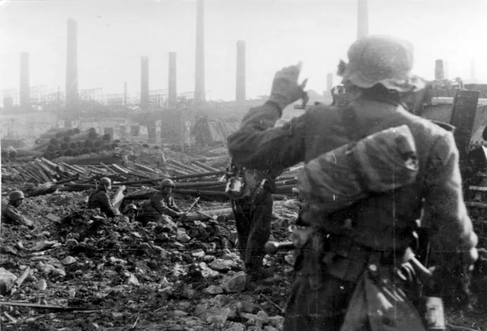

Batalla Stalingrado

¿Qué fue la batalla de Stalingrado?
La batalla de Stalingrado fue un enfrentamiento bélico entre tropas soviéticas y alemanas por el control de Stalingrado, la actual Volgogrado, en lo que hoy es Rusia. Comenzó el 23 de agosto de 1942 y finalizó al 2 de febrero de 1943, luego de que los alemanes se rindieran ante los ejércitos de la Unión Soviética.
En esta batalla se enfrentaron:
- El VI ejército alemán: apoyado por tropas enviadas por Italia, Rumania, Croacia y Hungría.
- El Ejército Rojo: que defendió la ciudad de Stalingrado y sus alrededores.
La batalla de Stalingrado fue un punto de inflexión en la Segunda Guerra Mundial, ya que frenó la ofensiva de la Alemania nazi en territorio soviético y debilitó las fuerzas del Eje. A partir de entonces los soviéticos infligieron derrota tras derrota a los alemanes y los empujaron fuera de su territorio.
En 1967 el gobierno soviético construyó en Volgogrado la monumental Estatua de la Madre Patria, que tiene 85 metros de altura y recuerda a los caídos en la batalla de Stalingrado.
Desarrollo
El ataque alemán se inició el 23 de agosto de 1942, con bombardeos terrestres y aéreos que destruyeron gran parte de las fábricas de Stalingrado.
Los primeros tanques alemanes entraron en la ciudad el 1 de septiembre. Pero los soviéticos no se dieron por vencidos y se comenzó a pelear barrio por barrio, casa por casa, cuerpo a cuerpo.
A mediados de septiembre los alemanes llegaron al centro urbano, a pocas cuadras del embarcadero sobre el río Volga. Pero los soviéticos contraatacaron con baterías de cohetes instaladas sobre camiones de transporte y enviando sobre los alemanes miles y miles de soldados novatos llegados desde la retaguardia.
Los defensores también emplearon como francotiradores a cazadores de las estepas. Estos certeros francotiradores tenían como blanco preferido a los oficiales alemanes.
Una y otra vez los alemanes frenaron los ataques soviéticos y contraatacaron, pero se fueron quedando sin municiones ni abastecimientos de comida y combustible.
Cuando llegó el invierno, los soviéticos atacaron desde el norte y desde el sur, atenazando a las fuerzas del Eje. Viéndose cercadas, las tropas rumanas y húngaras huyeron hacia el oeste.
Los alemanes quedaron cercados dentro de Stalingrado sin suministros por las duras condiciones climáticas. Los soldados germanos, agotados, comenzaron a morir por inanición y por congelamiento. El comandante del VI ejército, Friedrich Wilhelm von Paulus, pidió autorización para iniciar negociaciones con el enemigo, pero Hitler le prohibió rendirse y le sugirió que, en última instancia, se suicidara.
El 31 de enero de 1943 Paulus, desoyendo las directivas del Führer, se rindió ante los soviéticos, quienes el 2 de febrero recuperaron el control de la ciudad.
Causas
Las principales causas de este enfrentamiento armado fueron las siguientes:
- El deseo de Hitler de conquistar una ciudad que, desde 1925, llevaba el nombre del líder de la Unión Soviética, Iósif Stalin.
- La necesidad de Alemania de controlar todas las rutas de acceso a la cuenca petrolera de la región del Cáucaso, en manos de la Unión Soviética. Alemania requería petróleo para asegurarse la provisión de combustibles para sus blindados, barcos y aviones.
- La férrea decisión de los soviéticos de defender la ciudad y de frenar el avance alemán, que era continuo desde junio de 1941. Stalin y su alto mando eran conscientes de que, si Stalingrado caía en manos alemanas, el país se quedaría sin acceso al mar Negro, al Cáucaso y al mar Caspio.
Consecuencias
Las principales consecuencias de esta batalla fueron las siguientes:
- Tropas soviéticas recorriendo las ruinas de la ciudad de Stalingrado, luego del fin de la batalla (RIA Novosti Archives).
- Las fuerzas del Eje, a pesar de concentrar gran cantidad de fuerzas, sufrieron una catástrofe militar, en la que perdieron 740.000 hombres. Por primera vez en la guerra, Alemania cedió la iniciativa y tenía que pasar a la defensiva.
- Los soviéticos, a pesar de tener 1.200.000 bajas, obtuvieron una victoria estratégica que impidió a los alemanes sobrepasar el río Volga y controlar todas las rutas de acceso a los campos de petróleo del Cáucaso.
- La ciudad de Stalingrado fue devastada, ya que sus edificaciones quedaron destruidas y los servicios públicos inutilizados.
- Murieron más de 2 millones de personas entre militares y civiles, registrándose además 660.000 heridos, en lo que fue una de las batallas más sangrientas de la Segunda Guerra Mundial.
- 90.000 alemanes fueron tomados prisioneros y enviados a campos de concentración en Siberia. Obligados a caminar bajo la nieve durante miles de kilómetros, solo 6.000 sobrevivieron y fueron liberados diez años después.
- La victoria de la Unión Soviética levantó la moral de los Aliados y los impulsó a resistir y hacer retroceder a Alemania.
- La derrota alemana sumió a Hitler en una depresión que lo obligó a tomar antidepresivos y somníferos. Göring, el comandante de la fuerza aérea, cayó en desgracia ante Hitler por no haber podido cumplir su promesa de abastecer por aire a las fuerzas sitiadas.
- Stalin, que se había excusado de participar en la Conferencia de Casablanca por estar pendiente del resultado de la batalla, pudo asistir a la Conferencia de Teherán en una posición de fuerza y plantear exigencias a sus aliados.